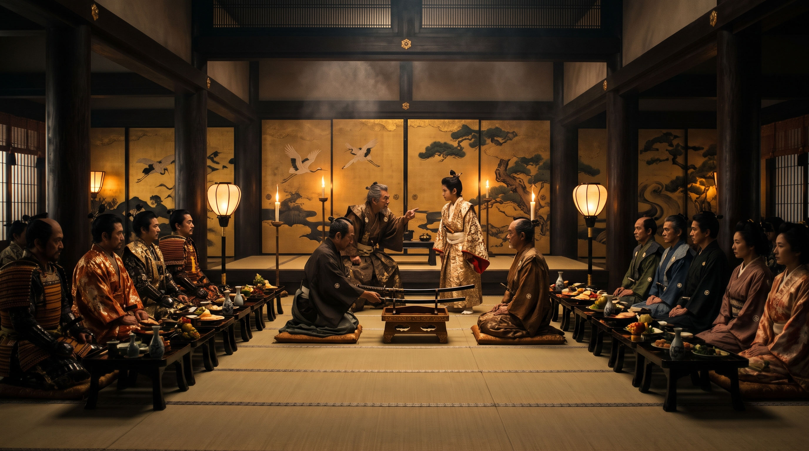
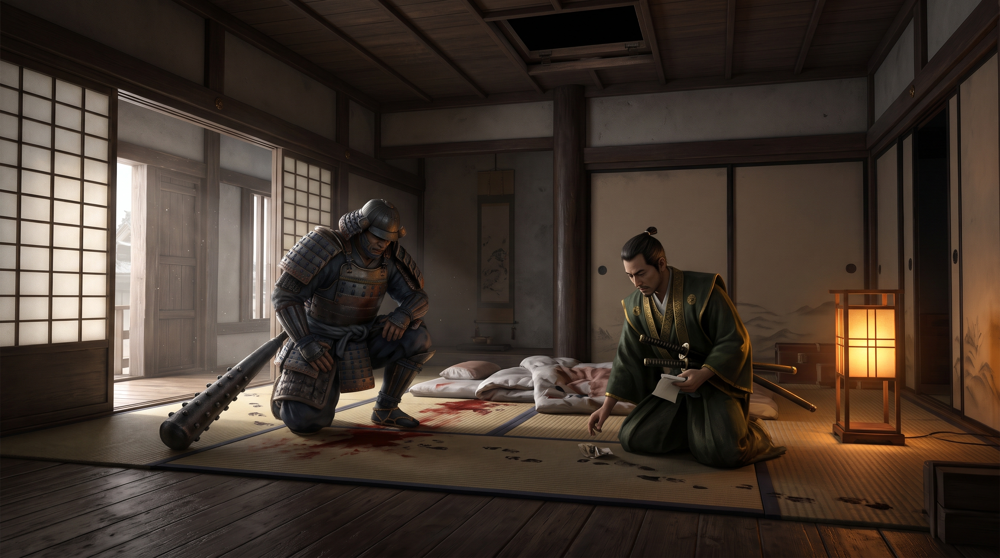
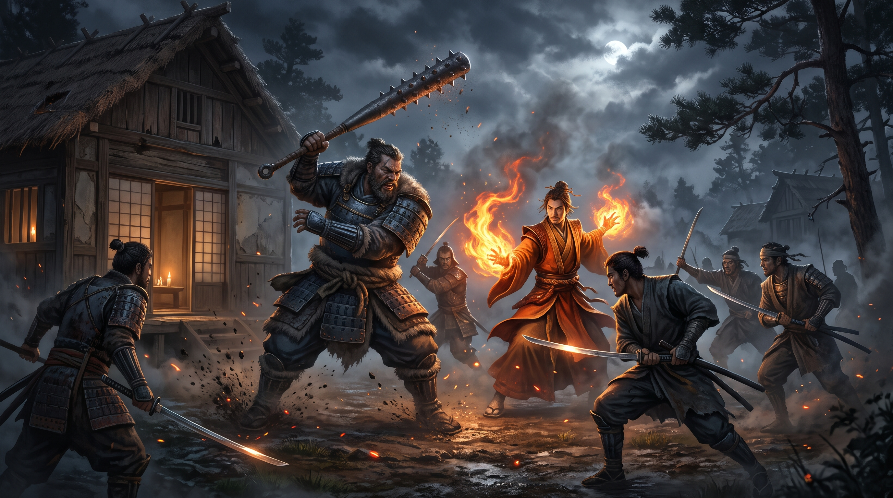

🐺 Version 1 : Okado Hiruma
Récit de l'éclaireur du Clan du Crabe[cite: 8]A peine remis de mon passage à la vie d'adulte suite au gempukku, je vais devoir user de la facette du bushido que je comprends le moins : REI, l'étiquette…[cite: 8]
Nous voilà donc invité au château de Kyotei par TSUME Retsu (clan de la Grue)[cite: 8]. Ce dernier organise un banquet pour honorer les participants aux phases finals du tournoi de Topaze[cite: 8]. Une telle invitation ne se refuse pas et ne serait-ce que pour faire honneur à ma famille et à mon clan, je me rends sur place[cite: 8].

En chemin, j'apprends que le château de Kyotei a un emplacement stratégique qui attire les convoitises des clans de la région : Grue, Lion et Phoenix[cite: 8]. D'ailleurs le château est souvent passé entre les mains de ces différents clans, le dernier en date étant justement la prise du château par TSUME Retsu des mains du clan du Lion[cite: 8]. Le château surplombe la bourgade de Kyotei qui est assez grande[cite: 8].
TSUME Retsu est connu pour être un homme de guerre et de poigne ce qui contraste avec le clan qu'il sert et est source de conflits internes… Ces Grues… Ils ne savent même pas reconnaitre la vraie valeur d'un samouraï[cite: 8].
Arrivés sur place nous allons donc à ce repas[cite: 8]. La nourriture est bonne mais une pression latente se fait sentir dans la salle[cite: 8]. Des Daimyo représentants les autres clans sont là : Shiba Katsuda du clan du Phoenix, Hikoma Hiujaki du clan du Lion et Daidoji Uji du clan de la Grue[cite: 8]. Lors du repas la réputation de Retsu ne tarde pas à se faire sentir[cite: 8]. Une altercation éclate entre lui est son fils : TSUME Takashi-san, qui quitte la salle[cite: 8]. Le banquet suit son cours comme si de rien n'était[cite: 8].
Des appartements nous sont mis à disposition pour passer la nuit sur place[cite: 8]. Ils sont collés à la partie interne du château[cite: 8]. A l'aube, des cris se font entendre, puis un brouhaha[cite: 8]. Des gens qui courent et s'affaire[cite: 8]. Je retrouve d'autres samouraïs du championnat de Topaze dans la cour qui fait face aux portes fermées de la partie intérieur du château[cite: 8]. L'annonce arrive vite à nos oreilles : TSUME Retsu a été assassiné pendant la nuit[cite: 8].

Suite à une partie de chasse où j'ai pu montrer mes talents de chasseur contrairement à mes camarades, Takashi nous avoue qu'elle était venue dans sa chambre le soir du meurtre mais il ne se souvient de rien[cite: 8]. L'enquête dans la chambre de Takashi met en évidence un empoisonnement de Takashi par Kaïra et l'utilisation d'un passage au plafond qui mène à la chambre de Retsu[cite: 8].
Nous allons donc à la maison du pin (maison de geisha) pour essayer de la retrouver mais elle est absente[cite: 8]. 1 koku plus tard la propriétaire nous révèle que Kaira entretient une relation avec un rônin du nom d'ITO[cite: 8]. Il est très apprécié à Kyotei car il défend les pauvres gens contre l'oppression locale[cite: 8]. Il habiterait une cahute à l'entrée de Kyotei[cite: 8].
Une fois devant sa cahute, Samui défonce la porte[cite: 8]. Il a raison, assez perdu de temps[cite: 8]. Kaira est là et nous révèle son histoire[cite: 8] :
« Je m'appelle Damatsu Kaira. Il y a longtemps ma famille a été attaquée par Tsume Retsu. Tout le monde périt sauf une fille et deux garçons. La fille a été vendue à la maison du Pin. La fille c'était moi. Heureusement Itto avait survécu , un samouraï de ma famille. Il m'a retrouvé et tout expliqué. J'ai décidé avec son aide de me venger et j'ai réussi ma mission »[cite: 8].

Mais du bruit se fit entendre à l'extérieur[cite: 8]. En sortant Itto était là… Avec 10 heimins équipés d'armure et de katana, une véritable armée[cite: 8].
La bataille éclata et ces paysans maniaient aussi bien le katana qu'un samurai[cite: 8]. J'ai été grièvement blessé mais heureusement que la mort d'ITO et de Kaira ont permis de faire fuir les paysans car je ne donnais pas cher de notre peau…[cite: 8]
Mais peu importe, comme nous l'avait demandé Hikoma Hiujaki, la justice a été rendu[cite: 8].
Shiba katsuda nous a remercié ainsi que TSUME Takashi qui a la lourde tâche de reprendre les rênes du château de Kyotei[cite: 8].
🏹 Version 2 : Tsuruchi Akira
Journal d'enquête et déductions logiques[cite: 8]Le lendemain de la cérémonie de mon gempukku, j'ai eu l'honneur de recevoir une invitation au château de Kyoteï estampillé du sceau du daimyo du clan de la grue, Tsume Retsu[cite: 8]. La missive conviait tous les participants du tournoi à commémorer la fête des morts à Kyoteï[cite: 8].
Après une discussion rapide, notre groupe (formé durant le tournoi de topaze) décida de faire la route ensemble[cite: 8]. Il fallait compter environ 1 semaine de route à cheval pour aller jusqu'à Kyoteï[cite: 8]. Durant le voyage, je me suis rappelé de certaines choses apprises lors de ma formation auprès de Li Er[cite: 8]. La forteresse de Kyoteï se trouve dans la vallée de Kintani, frontières du territoire du phœnix, du lion et de la grue, qui est très fertile grâce aux grandes rivières qui la traverse[cite: 8]. Cette position stratégique a toujours été très controversée et de grandes batailles éclatèrent pour son contrôle[cite: 8]. Un proverbe bushi dit même : “ Celui qui contrôle la vallée Kintani, contrôle l'empire”[cite: 8].
De nos jours, le propriétaire du château de Kyoteï est Tsume Retsu[cite: 8]. Li Er m'en avait parlé comme un homme ambitieux, inflexible et cruel[cite: 8]. Sa bataille contre Damashu Kojima (feu daimyo du clan du lion) 20 ans plus tôt au château de Kyoteï avait démontré aux yeux de tous, sa passion pour les champs de bataille[cite: 8].
Jour 1 :
Le soir de notre arrivée, nous sommes invités à dîner au château[cite: 8]. Deux tables sur l'extérieur de la salle sont pour les participants du tournoi de Topaze et au centre de la pièce une table de 9 places est réservée aux samouraïs et courtisans de renom[cite: 8] :
- • Daidoji Uji (ambassadeur du clan de la grue)[cite: 8]
- • Hikoma Ujiaki (ambassadeur lion)[cite: 8]
- • Doji Satsume (champion émeraude)[cite: 8]
- • Personnage qui m'est inconnu[cite: 8]
- • Retsu Tsume (daimyo du clan de la grue)[cite: 8]
- • Takashi Tsume (fils de Retsu Tsume)[cite: 8]
- • Natsu Jijusme (général de Retsu Tsume)[cite: 8]
- • Sutokhu[cite: 8]
- • Mansouri[cite: 8]
Le repas est magnifiquement orchestré les excellents plats sont agrémentés de spectacles de marionnettes et de danse[cite: 8].
Cependant, vers la fin du repas je perçois une tension entre Tsume Retsu et son fils[cite: 8]. Celui-ci semble vouloir quelque chose que lui refuse son père mais je détourne les yeux pour ne pas risquer d'offenser notre hôte[cite: 8]. Le repas touchant à sa fin nous décidons d'aller nous coucher dans les chambres mises à notre disposition dans le quartier des invités[cite: 8].
Jour 2 :
Aux aurores, c'est un tumulte et des cris qui nous font tous sortir de nos lits[cite: 8]. Une servante passe en courant devant ma porte en criant que Retsu Tsume a été assassiné durant la nuit[cite: 8].
Nous décidons donc d'aller chercher plus d'informations auprès des gardes mais ils nous ordonnent de rester dans l'enceinte du château sans aucune explication[cite: 8].
En discutant avec d'autres samouraïs, nous apprîmes que seul l'ambassadeur du clan du phœnix était resté au château cette nuit[cite: 8].
En fin de matinée, des gardes vinrent nous chercher et nous escortèrent jusqu'au château[cite: 8]. Shiba Katsuda (ambassadeur du clan du phœnix) nous propose alors d'aider à l'enquête pour trouver le meurtrier du daimyo[cite: 8]. C'est avec circonspection que j'accepte avec le reste du groupe et il nous remet un papier officiel nous délivrant le titre de magistrat[cite: 8].
Nous montons immédiatement dans la chambre du daimyo[cite: 8]. Le général s'y trouve ainsi qu'une servante entrain de nettoyer les traces de sang sur le sol et sur le futon[cite: 8]. En entrant dans la pièce, je remarque que le corps n'est plus là et que le plancher grince bruyamment sous mes pas[cite: 8]. Les autres discutent avec le général pendant que j'examine la petite pièce[cite: 8]. Un parchemin accroché au mur représente un vieux plan de l'étage, un coffre est contre le mur ainsi qu'un râtelier d'arme vide[cite: 8]. De l'autre côté de la pièce, il y a un cabinet de toilette avec deux coffres en nacre[cite: 8]. Je note que les coffres n'ont pas été fracturés et que rien ne semble avoir été dérobé[cite: 8]. Par la fenêtre, j'aperçois une autre tour où une sentinelle est postée[cite: 8].
Pendant que j'examinais la pièce, J'écoutais le général nous décrire la situation aux autres[cite: 8]. Les seules informations importantes étaient[cite: 8] :
- Toutes les nuits, les chambres du daimyo ainsi que celle de son fils étaient gardées par deux gardes[cite: 8].
- Le corps ainsi que l'arme du crime ont été emmenés par les etas pour laver le cadavre[cite: 8]
- Le cadavre a été découvert par la servante personnelle de Retsu Tsume qui est entrain de laver le sang sur le sol[cite: 8].
- Retsu Tsume a été poignardé en plein cœur[cite: 8].
- Le fils devrait succéder à son père[cite: 8]
Mode opératoire : Une personne est allée depuis la chambre du fils vers celle du père ce qui a permis d'éviter les gardes et ne pas faire de bruit[cite: 8].
Suspects :[cite: 8]
• Le fils (Tsume Takashi) — Mobile : (Politique) Prendre la direction du château[cite: 8]. Mais il aurait seulement commandité l'assassinat[cite: 8]. — Alibi : Aucun[cite: 8].
• Le général : — Mobile : (Politique) Prendre la direction du château — Alibi : Dans sa chambre[cite: 8].
Au vu des personnes suspectées, nous ne pouvons rien dire pour le moment[cite: 8]. Nous décidons de nous séparer en deux groupes pour accélérer l'enquête[cite: 8]. Les deux compères crabes vont voir le cadavre alors que Ryumitaka et moi allons voir les gardes qui étaient en faction[cite: 8].
Nous interrogeons les deux gardes qui sont (comme on pouvait s'y attendre) honteux et dépités. Ils confirment avoir été en poste durant toute la nuit et qu'ils n'ont rien entendu. L'interrogatoire continu et Ryumitaka sent que les gardes deviennent de moins en moins sincères lorsque l'on commence à poser des questions sur les éventuelles visites ce soir-là. Étrange… Nous laissons les deux gardes à leur sort funeste et nous allons questionner les gardes de la chambre du fils. Ces derniers sont encore moins loquaces et ils refusent presque de répondre à nos questions malgré nos menaces déguisées. Notre travail achevé nous nous rendons à l'auberge pour faire le point avec le reste du groupe.
Les deux crabes ont eu plus de chances que nous avec les eta :[cite: 8]
- L'ancien daimyo était a priori en grande négociation avec l'ambassadeur Grue avant sa mort[cite: 8]. S'ils n'ont pas pu apprendre le sujet des négoces, la discussion était assez houleuse d'après un témoin, Ouji a même menacé clairement de mort Retsu[cite: 8].
- Le fils ne s'intéressait pas à la politique mais était très porté sur l'art ce qui contredit notre mobile[cite: 8]. Son père était très contrarié par les projets de son fils car il souhaitait que ce soit lui qui reprenne les rênes du château à sa mort[cite: 8].
- Enfin, le père et le fils allaient tous deux à la maison de geisha 'les chrysanthèmes'.[cite: 8]
Quand soudain, le serviteur qui nous servait s'effondre à nos pieds[cite: 8]. Une baffe du crabe le réveil et nous lui posons quelques questions dans l'arrière-boutique (nous soupçonnions qu'il est voulu nous empoissonner…)[cite: 8]. Il nous apprend qu'il ne se sent pas bien depuis qu'il a fini les deux coupes de saké de Takashi Retsu en rangeant sa chambre le matin même[cite: 8]. Nous en déduisons que le fils a été drogué ce qui le sort de la liste des suspects[cite: 8].
Mise à jour des suspects :[cite: 8]
• Le général : Mobile (Politique) Prendre la direction du château[cite: 8]. Mais il aurait seulement commandité l'assassinat[cite: 8]. — Alibi : Dans sa chambre[cite: 8] — Preuves : Aucune[cite: 8]
• L'ambassadeur grue : Mobile : Un refus de la part de Retsu sur un sujet inconnu[cite: 8]. Mais il aurait seulement commandité l'assassinat[cite: 8]. — Alibi : Dans sa chambre[cite: 8] — Preuves : Aucune[cite: 8]
Pour résoudre cette enquête nous devons retrouver la personne qui accompagnait le fils ce soir-là. Nous nous dirigeons donc vers la maison des chrysanthèmes.
C'est la patronne de l'établissement qui nous reçoit. Elle ne reconnaît pas la broche mais nous confirme que Retsu Tsume fréquentait l'établissement de manière non officiel. Son fils en revanche préférait aller à la maison du pin (connu pour être dirigé par des scorpions). Sitôt sorties de la maison des chrysanthèmes, nous allons à la maison des pins (cette balade aurait plu à Sutokhu !).
Kumiku (la patronne) n'est pas là et nous discutons le serviteur qui nous a ouverts[cite: 8]. Il nous apprend que la broche appartient à Reikka qui est la préférée de Takashi Tsume (d'où la présence de la broche dans la chambre du fils)[cite: 8]. Au moment où il nous apprend que Reikka travaille à la maison des pins depuis longtemps la patronne arrive et le congédie[cite: 8]. Le dialogue est plus compliqué avec elle et Okado la soudoie en lui donnant 1 koku (je me dis qu'il ne doit pas connaître la valeur de l'argent et qu'il n'a jamais dû manquer de rien…)[cite: 8]. Grâce à ce “don”, Kumiku nous explique que Reikka est amuseuse de Itto est qu'elle passe beaucoup de temps chez lui[cite: 8]. D'après ses dires, Itto est le rônin le plus populaire du village[cite: 8]. Il a sa propre milice pour faire régner l'ordre[cite: 8].
A la sortie de la maison de geisha, un rapide résumé de la situation fait clairement apparaître deux voies différentes :[cite: 8]
- Soit le meurtre vient du côté des maisons closes[cite: 8]. Mais nous n'avons aucun mobile[cite: 8]. Nous savons seulement que Reikka était avec le fils le soir du meurtre et qu'il a sûrement été drogué[cite: 8].
- Soit le meurtre est politique et vient de l'ambassadeur du clan du phœnix[cite: 8].
Les deux crabes étant un peu trop bourrin pour dialoguer convenablement avec l'ambassadeur du phœnix, Ryumitaka et moi nous nous chargeons de cette mission pendant que les deux crabes et le loup vont rencontrer Itto[cite: 8].
En attendant la partie de chasse, nous sommes rejoints par nos compères qui nous annoncent avoir retrouvé l'obi à la perle manquante chez Itto et que ce dernier commence à poser des questions sur notre groupe d'enquêteur[cite: 8]. Il devient donc notre suspect n°1 comme commanditaire du meurtre mais pour une raison que l'on ignore[cite: 8].
Synthèse finale du mode opératoire :
Reikka a drogué Takashi Tsume pour qu'il s'endorme[cite: 8]. Puis elle est montée dans le faux plafond pour accéder à la chambre de Retsu Tsume[cite: 8]. Elle l'a assassiné durant son sommeil et a fait le chemin en sens inverse pour retourner dans la chambre de Takashi Tsume[cite: 8].
Coupables : Reikka la favorite de Takashi Tsume[cite: 8] • Itto, le rônin du village (commanditaire)[cite: 8].
Pendant que nous réfléchissons à la situation, la cérémonie de seppuku des gardes de Retsu Tsume a lieu devant nous[cite: 8]. Je me dis que ces idiots avaient protégé les secrets de leur seigneur jusqu'à leur mort (ce qui nous a fait perdre du temps) même si c'était tout à leur honneur il n'aurait jamais pu monter dans la hiérarchie car il ne voyait pas plus loin que les ordres qu'on leur donnait[cite: 8]. Combien d'autres secrets emmenaient- ils avec eux dans la tombe…[cite: 8]
Takashi Tsume lança la partie de chasse avec un rapide galop, ce qui semblait poser quelques problèmes aux autres participants[cite: 8]. Le prince tira un faisan et un lapin (que je lui laissai bien volontiers)[cite: 8]. Peu après, je tuai un lapin d'une flèche en plein cou[cite: 8]. Le style de chasse d'Okado était particulier puisque c'est son loup qui lui ramenait les proies abattues[cite: 8].
Dès que nous pouvons quitter le repas sans offenser nos hôtes, nous nous rendons d'un pas décidé à l'auberge pour interroger Itto mais celui-ci n'est pas là[cite: 8]. Nous persuadons l'aubergiste de nous indiquer sa maison et nous nous rendons chez lui[cite: 8]. Nous approchons de sa cabane à pas de loup et nous entendons chantonner à l'intérieur[cite: 8]. Alors que je m'approche de la seule fenêtre pour observer l'intérieur[cite: 8]. Ce gros bourrin de Samui défonce la porte d'un coup d'épaule et tombe nez à nez avec une femme (qui ressemble au descriptif que l'on nous a donné de Reikka) qui commence à hurler[cite: 8]. Samui semble passablement énervé par les cris stridents de la jeune fille et la menace[cite: 8]. C'est en pleure qu'elle nous avoue tout[cite: 8]. Son vrai nom est “Damatsu Kaira”[cite: 8]. Enfant elle a survécu au pillage et massacre de son château par l'armée de Retsu Tsume[cite: 8]. C'est le feu daimyo en personne qui a fait exécuter sa famille devant ses yeux et qui la vendue ensuite à la maison des pins[cite: 8]. Un jour, Itto est venu la rencontrer[cite: 8]. Il lui apprit qu'il était un ancien samouraï de son père et qu'il voulait venger sa mort[cite: 8]. Ainsi, elle a mis tout en œuvre pour séduire Takashi afin de pouvoir entrer librement dans le château et mettre leur plan à exécution[cite: 8].
Nous rentrons au château de Kyoteï faire notre rapport à Takashi Tsume[cite: 8]. Il semble attristé par la nouvelle mais il est heureux que la mort de son père ait été vengée[cite: 8]. Il doit désormais se préparer à être son digne successeur[cite: 8].
🔨 Version 3 : Par Hida Samui
Chronique brute en 5 chapitres du bushi du Mur Kaiu[cite: 8]Chapitre I : Un banquet mortel[cite: 8]
Toute la clique se retrouve, soit les seize finalistes du tournoi de Topaze[cite: 8]. Certains sympathique, d'autres aussi aimable qu'une descente de lit[cite: 8]. Le Scorpion par exemple, il a triché tout le long, tout le temps dans les mauvais coups, et pourtant il reste invité[cite: 8]. Je ne comprendrai jamais l'Empire a vouloir continuer de faire confiance aux Scorpion, sachant qu'ils les ont trahi plus de fois qu'un contrôleur des impôts sur le riz[cite: 8]. Le mystère n'a pas subsisté très longtemps ; quand je vois que ce sont des Grue qui organisent le banquet, je remarque que leur faiblesse n'est pas juste dans leur muscles, mais aussi dans leur siamoises[cite: 8].
J'arrive au château de Kyoteï avec Okado-kun où Retsu TSUME est notre hôte pour le festival des morts[cite: 8]. Sur le chemin, j'ai entendu des histoires agréables à son sujet, comme sa poigne de fer ou bien des histoires de guerres sanglantes datant d'il y a vingts ans entre le clan Grue, Phoenix et Lion[cite: 8]. Retsu TSUME remporta la victoire et récupéra en guise de récompense le château de Kyoteï[cite: 8].
Nous voilà donc au festival des morts[cite: 8]. Je ne suis pas très à l'aise avec toutes ses festivités autour d'un sujet aussi macabre[cite: 8]. Je ne connais rien à leurs coutumes, mais c'est dans ces moments que l'on remarque qu'ils ont oublié ce qu'il se passe derrière le mur[cite: 8]. Mes frères meurent chaque jour de la main des onis[cite: 8].
Nous passons au banquet[cite: 8]. À côté de moi Okado HIRUMA, mon compagnon de voyage et avant tout Crabe, Ryu ISAWA un Phoenix qui manie les mots mieux que les armes, et presque aussi bien que sa magie[cite: 8]. Un peu plus loin Akira TSURUCHI, un du clan de la Licorne, habile à l'arc mais faible dans tout le reste, et Mansaru MIRUMOTO un gars silencieux du clan du Dragon[cite: 8]. Sur la table principale, je reconnais notre hôte Retsu TSUME, je devine son fils qui se nomme Takashi et à côté qui se pavane Suthoku KAKITA : le champion de Topaze[cite: 8].
Au cours de la soirée, Ryu et Akira remarque que Retsu et son fils se dispute et que le père tranche le dialogue par un non clair et précis[cite: 8].
– Takashi est plus intéressé par la calligraphie et l'art que la guerre, ce qui l'éloigne beaucoup de son père, nous partage Ryu[cite: 8].
On peut aussi apercevoir les trois ambassadeurs Lion, Phoenix et Grue[cite: 8]. La politique m'intéresse autant que le nom du cleps à Okado, donc je ne m'éterniserais pas dessus[cite: 8].
Nous partons nous coucher au château, dans le quartier des invités[cite: 8].
Chapitre II : Une promenade dans les jardins[cite: 8]
J'ai dormi comme un loir, mais mon réveil reste un peu gâché par les cris des servantes[cite: 8].
– Retsu-sama est mort ! S'écrit l'une d'elles[cite: 8].
Il fallait s'en douter[cite: 8]. Une homme avec autant de pouvoir possède de nombreux ennemis, et sa position au sein de son clan ne lui en ramène que beaucoup plus[cite: 8].
On se retrouve tous dans le couloir et on part direction des jardins, seul point d'accès vers la tour du donjon où se situe la chambre du roi[cite: 8].
La chance ne nous souris pas, un mur de garde est posté à l'entrée du donjon[cite: 8].
Déjà qu'il ne sert pas à grand-chose, il aurait au moins pu nous servir à entrer et commencer à investiguer[cite: 8]. Personne ne semble l'avoir vu aujourd'hui[cite: 8]. Bizarre, mais je m'en fout[cite: 8].
– Allons vers la ville, je leur propose[cite: 8]. Suthoku est certainement dans un salon de geïcha[cite: 8].
Je vous le donne en mille, la porte du jardin qui mène à la ville est gardé par des gardes[cite: 8].
– Nous souhaitons nous rendre en ville[cite: 8].
– Impossible répond le garde, personne n'est autorisé à sortir tant que le meurtrier n'a pas été découvert[cite: 8].
Le garde nous entend parler de Suthoku et nous donne l'information suivante[cite: 8] :
– Le champion de Topaze et le champion d'Émeraude sont partit hier soir après le banquet[cite: 8].
Merde… Notre laissez-passer vient de se tirer[cite: 8]. Je vous avoue que je n'ai pas grand-chose à faire de Retsu, mais mon honneur m'oblige à rendre justice[cite: 8].
– Il est toujours dans les mauvais coup Satsume DOJI… Dit Ryu d'un air pensif[cite: 8]. Pour ceux qui se demande, Satsume DOJI est le champion d'Émeraude[cite: 8].
On croise Sugaï, le Scorpion dont je vous narrais les exploit tout à l'heure, et si vous avez plus de mémoire qu'un pot de chambre, vous vous souviendrez que c'est un salaud fini[cite: 8].
Plus rien ne nous retiens, nous partons chercher des indices dans le quartier des invités[cite: 8]. A l'instant où nous arrivons, un messager nous tend une lettre[cite: 8]. Celle-ci nous demande de nous rendre aux appartements de l'Ambassadeur Phoenix[cite: 8]. Je sens que ça va nous retomber dessus…[cite: 8]
Nous arrivons chez l'Ambassadeur[cite: 8]. A se moment quatre samouraïs comme nous sortent de la pièce[cite: 8].
– Bonjour samouraïs, nous dit l'ambassadeur[cite: 8].
Il salue Ryu, du clan du Phoenix comme lui, Akira, Okado et moi pour terminer[cite: 8].
– Vous avez entendu parler de la tragédie de cette nuit, n'est-ce pas ?[cite: 8]
Nous acquiesçons[cite: 8].
– J'aimerais vous mandater pour enquêter sur la mort de Retsu-sama[cite: 8].
Il nous tend une lettre qu'il signe et pose son sceau[cite: 8]. Ce document fait de nous des magistrat Phoenix[cite: 8]. Il se lève, ce qui est sa façon de nous dire qu'il nous a assez vu[cite: 8]. Nous sortons[cite: 8].
– Il est étrange que ce soit le clan Phoenix qui nous demande d'enquêter, non ? Akira soulève cette question ?[cite: 8]
Que l'on soit manipulé ou non, l'important est que nous pouvons entrer dans le donjon[cite: 8].
Chapitre III : Une tache de vin sur le sol[cite: 8]
Nous présentons le laissez-passer, les gardes s'écartent[cite: 8]. Une fois arrivé devant la chambre de Retsu, le Général Shizuma NASU nous attends[cite: 8].
– Bonjour, je vous attendais, dit-il[cite: 8].
– Bonjour General-sama, commençai-je[cite: 8]. Nous avons été mandaté par l'ambassadeur Phoenix en tant que magistrat pour enquêter sur la mort du Daimyo[cite: 8].
– Oui, c'est horrible[cite: 8]. Nous l'avons retrouver mort face contre le sol avec une dague plantée en plein cœur[cite: 8].
– Il n'était pas dans son lit ?[cite: 8]
– Non, il a du se lever et être surpris par son agresseur[cite: 8].
– N'y avait-il pas des gardes à la porte ?[cite: 8]
– Si, deux[cite: 8]. Mais ils n'ont rien entendu[cite: 8]. Cela est surprenant car Retsu-sama tenait à ce que son plancher craque[cite: 8]. Grâce à cela, les gardes pouvait connaître les déplacements dans la chambre[cite: 8].
Pour être étrange, c'est étrange[cite: 8]. Le vieux qui se retrouve planté dans sa chambre pourrait ressembler à un suicide si vous étiez un abruti fini, mais le fait de n'avoir rien entendu peut supposer deux choses[cite: 8]. Soit il s'agit d'un ninja, soit les gardes mentent… Ce seraient-ils assoupi ?[cite: 8]
– Le râtelier est vide, y avait-il une arme avant le meurtre ?[cite: 8]
– Oui il y en avait une[cite: 8]. Mais elle a été transmise à son fils ce matin même, il a hérité du statut de Daimyo[cite: 8].
Nous commençons à fouiller la chambre[cite: 8]. Okado se dirige vers la fenêtre, mais il est certain qu'il n'y a aucune trace d'effraction[cite: 8]. Je cherche de la fenêtre vers le lit mais rien non plus… Par contre, dans le coin de la pièce, j'aperçois une petite perle[cite: 8]. Ryu et Akira sont d'accord, il s'agit d'une perle venant d'une ceinture appartenant au clan Lion[cite: 8].
– Mais qu'est-ce que les Lions ont à voir dans cette affaire ? Se demande Akira[cite: 8].
– Il s'agit peut-être d'un indice laissé exprès, ajoute Ryu[cite: 8].
– Franchement, je ne pense pas[cite: 8]. Vu comment c'était caché, autant la mettre un peu plus en évidence, dis-je[cite: 8].
Pour avoir plus de réponse, Ryu invoque un Kami de l'air[cite: 8]. Il a le droit à deux questions[cite: 8]. Le magicien Phoenix réfléchi un peu, et soumet sa première question[cite: 8].
– Y'a-t-il eu l'utilisation de la magie dans cette chambre, cette nuit ?[cite: 8]
Il ressent que la réponse est non[cite: 8].
– Je me souviens que le kami de l'air est connu pour être sensible aux sensations, commença Ryu[cite: 8]. Pouvez-vous me faire ressentir la mort de Retsu-sama ?[cite: 8]
Nous ressentons le vent plat, lorsqu'une bourrasque vient du haut vers le bas, et enfin le vent redevient plat[cite: 8].
Mouais, c'est pas très utile cette dernière question, mais la première nous apprend quand même qu'il s'agit très probablement d'un ninja du clan du Lion[cite: 8]. Il est possible qu'un clan est demandé de faire cette assassinat, mais ce n'est pas une logique Lion[cite: 8]. Normalement, ils sont moins sournois[cite: 8].
Ryu utilise une fois de plus sa magie[cite: 8]. Je ne suis pas très fan de se type de pratique, mais c'est assez utile dans notre cas[cite: 8]. D'ailleurs, il nous partage le fait qu'il vient de lancer un sort de détection des passages secrets, mais infructueux[cite: 8].
– Ah non, s'exclame-t-il[cite: 8]. Il regarde au plafond[cite: 8]. Une trappe ![cite: 8]
Effectivement, une trappe est bien dissimulée au plafond proche du lit[cite: 8]. Je la soulève et passe la tête[cite: 8]. Je ne vois pas grand-chose, mise à part que des traces dans la poussière mène à une chambre annexe : celle de Takashi TSUME[cite: 8].
Nous nous séparons en deux groupes : Ryu et Akira vont parler aux gardes, Okado et moi allons examiner le corps de Retsu d'un peu plus près[cite: 8].
Chapitre IV : Beaucoup d'ennemis[cite: 8]
Un serviteur nous accompagne vers le mort[cite: 8]. J'essaie de relever le drap mais on m'y empêche car seul le serviteur peut le faire[cite: 8]. Le problème, c'est que la mort à l'aide de le déranger[cite: 8]. Bref, on ne choisit pas son métier, et quand on choisit de servir c'est que d'une certaine façon on est un peu bon à rien[cite: 8].
En examinant le corps, je ne remarque aucune trace de lutte ou de strangulation[cite: 8]. Une dague banale est posée à côté du corps inerte[cite: 8]. Dommage, pas d'indice cette fois-ci[cite: 8]. J'essaie d'entamer la discussion avec le serviteur, pour le prendre par les sentiments[cite: 8]. Ryu m'a inspiré tout à l'heure[cite: 8].
– Ça a dû être dur de perdre Retsu-sama, lui dis-je d'un ton compatissant[cite: 8].
– Euh oui[cite: 8].
– Est-ce qu'il avait des ennemis ?[cite: 8]
– Je ne sais pas trop…[cite: 8]
Okado s'impatiente :[cite: 8]
– Si vous savez des choses que vous refusez de nous partager vous pouvez être un complice[cite: 8].
– Non non ! Pas du tout, je vous promets je ne sais rien[cite: 8].
Il continue de s'acharner sur cette loque, qu'il finit par pleurer de nous avouer un indice :[cite: 8]
– J'ai entendu parler d'une dispute le soir du meurtre, snif, snif, c'est la servante de Retsu qui m'en a parlé[cite: 8]. Elle sait des choses…[cite: 8]
Comme quoi, rien ne vaut les sentiments[cite: 8]. Surtout quand on les fait pleurer comme des fillettes[cite: 8].
Lorsque nous retouvons Akira et Ryu, ils nous disent que les gardes refusent d'avouer qu'il y a bien eu de la compagnie chez Takashi le soir du meurtre[cite: 8]. Ils sont certains qu'ils ont menti[cite: 8]. Peut-être essaient-ils de protéger leur maître ?[cite: 8]
On retourne voir Truki, c'est le nom de la servante[cite: 8]. Elle s'assure que personne n'écoute notre conversation et nous avoue qu'il y a eu une altercation entre l'ambassadeur Grue et Retsu[cite: 8]. Elle a très peur du général, mais elle nous conseille d'aller jeter un coup d'oeil au salon de Geïcha[cite: 8].
Dans le premier bordel, il s'agit du salon préféré de Retsu-sama[cite: 8]. Maintenant, il y ira beaucoup moins[cite: 8]. En longeant les façades, on entend parler d'un autre salon, celui des Pins[cite: 8]. Il est tenu par le clan des Scorpions[cite: 8].
Nous nous installons dans le salon et demandons de voir la geïcha préférée du fils à Retsu[cite: 8]. On nous annonce qu'elle n'est pas là pour le moment[cite: 8]. Mince alors… Du coup, je prends rendez-vous à 16h avec elle[cite: 8]. On nous apprend aussi qu'elle se trouve certainement chez son amoureux, un certain Ito, qui est un héros pour les villageois[cite: 8].
En allant vers la cabane d'Ito, nous le croisons justement[cite: 8]. Quand on lui parle de la geïcha, il sait qu'elle l'aime mais lui semble assez détaché[cite: 8].
– Je ne l'ai pas vu depuis hier soir, nous répond-il[cite: 8]. Je vais aller boire un coup, vous voulez venir ?[cite: 8]
On réfléchit un peu, mais on décide quand même d'aller fouiller sa cabane[cite: 8]. Qui sait, on pourrait trouver quelque chose d'intéressant ![cite: 8]
La cabane est en bois, un peu à l'extérieur de la ville[cite: 8]. Personne n'est à l'intérieur, alors on entre[cite: 8]. Le gredin a bien caché son jeu, on retrouve près du lit une ceinture[cite: 8]. Il manque à celle-ci une perle, exactement celle qu'on a retrouvée dans la chambre de Retsu-sama[cite: 8].
Cette histoire commence un peu à me fatiguer[cite: 8]. Il est temps d'arrêter de se faire avoir, et reprendre en main cette enquête[cite: 8]. Nous hésitons à nous séparer pour aller chercher Ito, car c'est un suspect parfait[cite: 8]. La voix du groupe l'emporte, nous n'allons pas poursuivre Ito à la taverne mais plutôt retourner voir l'ambassadeur Phoenix[cite: 8].
Chapitre V : Carte Blanche[cite: 8]
Il se passe deux, trois histoires et enfin on retrouve le jeune roi[cite: 8]. On lui raconte tout ce que l'on sait[cite: 8]. D'abord avec des pincettes… et puis je m'emporte[cite: 8].
– Rikka a tué votre père ! Même si vous l'aimez il faut absolument l'arrêter ![cite: 8]
C'est alors qu'il nous avoue tout[cite: 8]. Oui, elle était bien dans sa chambre la nuit du meurtre[cite: 8]. Malheureusement il ne se souvient de rien, il s'est endormi très rapidement… Trop rapidement[cite: 8]. Du somnifère, la garce[cite: 8]. Il se rend à l'évidence et nous donne carte blanche pour arrêter Ito et Rikka[cite: 8].
Pour se changer on fait une petite chasse à court[cite: 8]. Je ne vais pas m'étendre là-dessus, car je n'ai pas spécialement brillé[cite: 8]. Et quand je ne brille pas, ce n'est pas intéressant[cite: 8].
Par contre, je peux vous raconter le dénouement ![cite: 8]
Direction la taverne[cite: 8]. Il fait nuit et l'accueil n'est pas très sympathique[cite: 8]. Personne ne tient à nous aider[cite: 8]. Le couard se cache peut-être chez lui[cite: 8].
En approchant près de sa cabane, une lumière à la fenêtre nous indique la présence d'au moins une personne[cite: 8]. On le tient ![cite: 8]
J'aperçois Akira qui espère entrer sans se faire repérer[cite: 8]. Moi, je ne veux pas lui courir après, alors je défonce la porte[cite: 8].
Une femme est en train de préparer le thé, et cette femme est Rikka[cite: 8]. Elle est surprise de nous, et elle essaie de nous parler[cite: 8]. Personnellement, je ne tiens pas à me faire enfumer alors je la choppe direct[cite: 8]. Je crois qu'elle veut nous faire une cérémonie du thé et nous expliquer sa vie, mais je n'oublie pas qu'elle est sournoise et a déjà tué le roi[cite: 8].
Sauf que dehors, Ito nous attend[cite: 8]. Et il n'est pas seul, quelques villageois sont bien armés avec lui[cite: 8]. Ito nous raconte leur histoire : Enfant, leur clan Lion s'est fait attaquer par Retsu, seuls Ito et Rikka ont survécu et ont passé ces dernières décennies à élaborer un plan pour se venger[cite: 8].
Ito décide de nous tuer, alors Ryu commence à attaquer en calcinant Ito[cite: 8]. Pour le terminer, je fonce sur lui et je lui défonce le crâne avec mon Tetsubo[cite: 8]. Malgré le fait que Rikka a réussi à rejoindre le combat en nous faisant face, nous allons nous faire un plaisir de la capturer vivante[cite: 8].
Malheureusement, elle se tranche la gorge à la fin du combat[cite: 8].
Le roi est heureux que nous ayons rendu justice à son père[cite: 8]. Vous remarquerez peut-être la différence de discours dans ce texte, mais lors de la fouille de la chambre du fils à Retsu, j'ai perdu mon crayon[cite: 8]. Je ne l'ai retrouvé que trois mois plus tard[cite: 8]. Dommage[cite: 8].